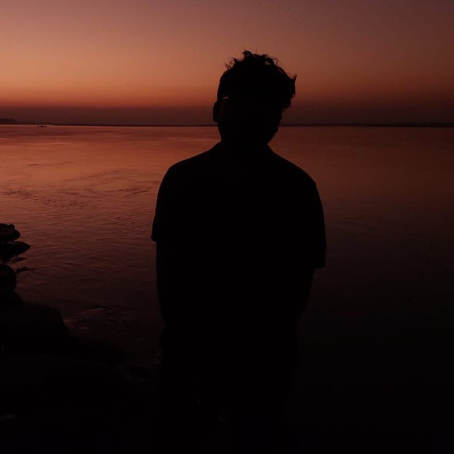

Hi.. I'm Satya, B.tech(Pre Final Year) Undergraduate student at Indian Institute of Information Technology, Guwahati. I am a Junior Web Developer able to build a Web presence from the ground up - from concept, navigation, layout, and programming to UX and SEO. Skilled at writing well-designed, testable, and efficient code using current best practices in web development. Fast learner, hard worker, and team player who is proficient in an array of scripting languages and multimedia Web tools.